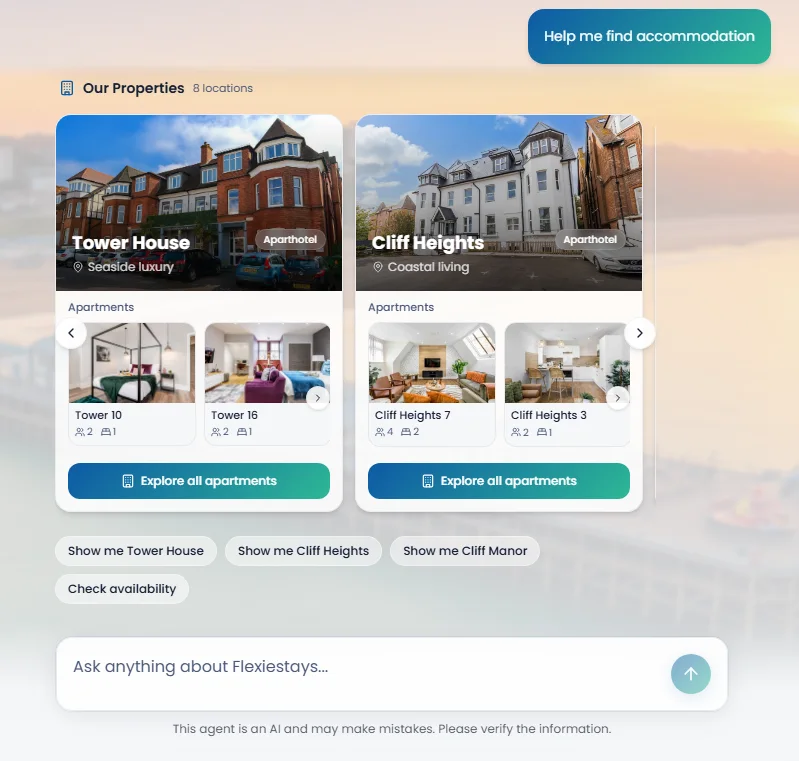
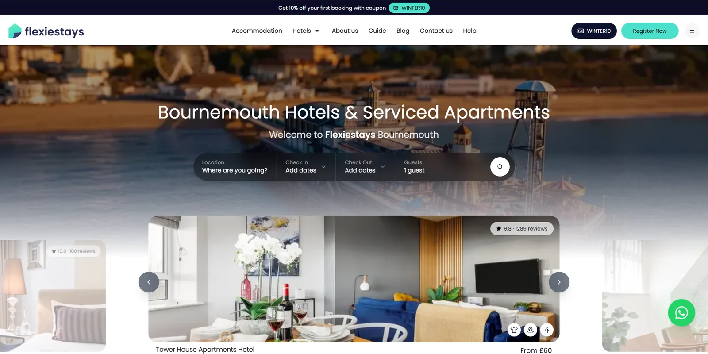
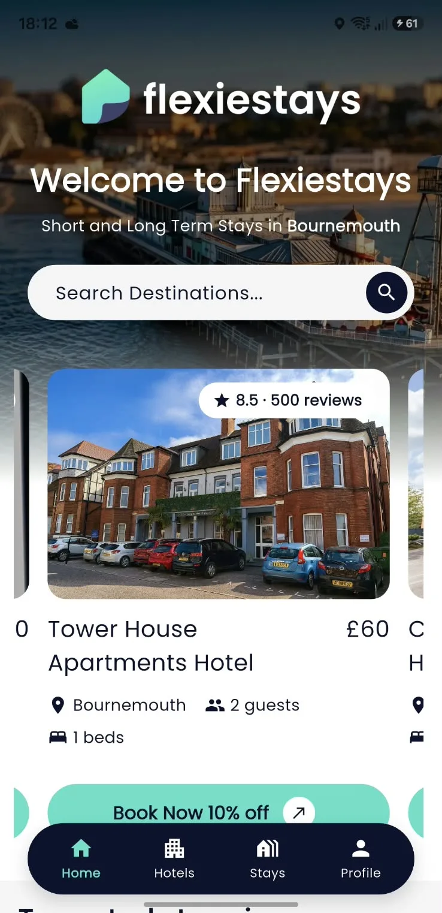

What shipped

How a question becomes an answer
The guest asks
“Help me find accommodation”, typed or picked from a suggestion.
Foxie calls a tool
Instead of answering from memory, the model calls a tool that looks up the properties and their apartments.
The answer renders as interface
The result streams into the chat as components: property cards with photos, guest and bedroom counts, and a button to explore each building.
The next step is one tap away
Chips like “Show me Tower House” or “Check availability” keep the conversation moving.
Why cards instead of text
Someone choosing where to stay wants to see the place. A card with photos and capacity answers faster than a paragraph. And because the cards are filled by a tool call rather than written by the model, what the guest sees are the real listings.
Foxie also says plainly that it is an AI and can make mistakes, right under the input.
The rest of the product
Foxie sits on top of everything else I run at Flexiestays: the Nuxt booking website with Cypress tests, the Flutter app for iOS and Android tested with Patrol, and the internal dashboards.

